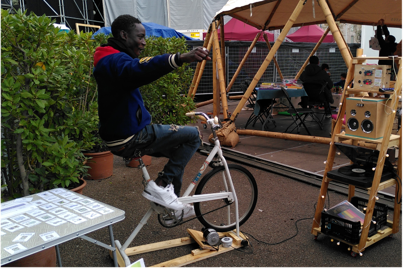
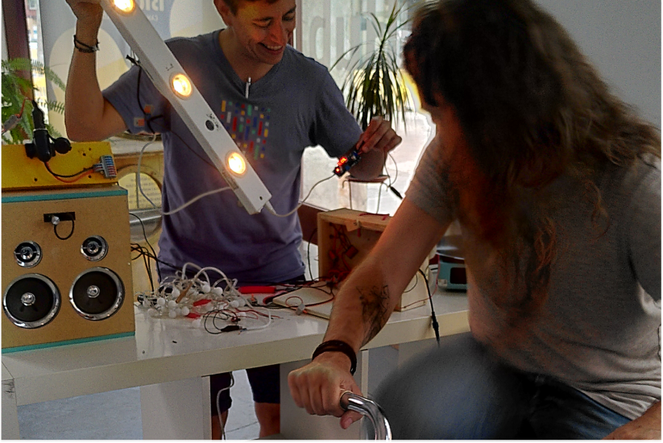

projects

Solar Brunch
Our take on a (SUN)day brunch, think solar music, bike music, bike beatboxing and of course solar cooking

Con-serve
An event focused on new narratives around food and ancient traditions from different cultural backgrounds

Low tech life festival
Festival in Asturias focusing on all things low-tech where we hosted a "Solar Aperitivo"

Fira de Consum Responsable
Human powered music station for Espai Consum Responsable stand in the Fira de Consum Responsable i d’Economia Social i Solidaria

Bike generator workshop
A workshop to discuss about human power, the basics of electricity and to learn how to make your own bike generator